![[Top bar]](gimpcor.files/Topbar-ru.gif)
![[Bottom bar]](gimpcor.files/Bottombar-ru.gif)
| Эта заметка доступна
на: English
Castellano
Deutsch
Francais
Nederlands
Russian
Turkce
|
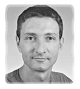
автор Yves
Ceccone
Об авторе:
Фотограф, некоторое время назад увлекшийся компьютерной графикой, и с
тех пор так и не бросивший мышку.
Содержание:
- Инструменты
- Некоторые
общие правила для инструментов и выделений
- Небольшие
примеры
- The
drawing pen
- "Волшебная
палочка" и ручное выделение (горячий песок)
- Маски
и "лассо" (погружение)
- Маска
с размытым контуром (глаза)
- Тонкая
настройка...
- Страница
отзывов
|
Инструменты Gimp: выделение и коррекция цвета
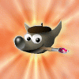
Резюме:
Gimp очень мощная программа для создания и редактирования изображений.
Эта статья о некоторых из его многочисленных инструментов, которые позволяют
делать выделения. Выделение используется для того, чтобы изолировать некоторую
часть изображения с целью его изменения, не затрагивая оставшуюся часть
изображения. Вы можете копировать, перемещать, заменять, применять фильтры к
выделению, также можно изменять его цвета, контрастность, яркость или применить
к нему какой-либо эффект. Список возможностей бесконечен.
Будте очень осторожны при коррекции цвета. Если Вы хотите получить результат,
который выглядит натурально (разумеется на Ваш взгляд), нужно сделать так чтобы
коррекция цвета не бросалась в глаза.
Эта статья описывает инструменты выделения Gimp-а, различные возможности по
манипулированию выделением и даёт представление о некоторых инструментах
цветовой коррекции.
Эта панель инструментов стабильной версии Gimp 1.0.4. Но
я Вам очень рекомендую установить последнюю версию, поскольку в ней много новых
возможностей. Например, Gimp 1.1.9 не вызывает никаких проблем (на моём redHat
6.0), содержит 6 дополнительных инструментов, новые возможности для инструмента
"перо", новую навигационную систему для масштабирования,
...
Инструменты для выделения прямоугольных и эллиптических/круговых
областей.Эти два инструмента очень легко использовать, и при двойном
щелчке на иконке Вы можете изменить некоторые их опции (например, закруглённые
углы). Для того чтобы выделить круговую область, выберите инструмент для
выделения эллипса и во время выделения просто держите нажатой клавишу
"
shift".
"Лассо" служит для выделения областей, которые
Вы рисуете рукой. Возможные опции - anti-aliasing (устранение контурных
неровностей) и soften (смягчение).
"Волшебная палочка"
предназначена для выделения однотонных областей. Этот инструмент аккуратно
выделяет только те области, которые имеют правильную форму. Его также можно
использовать для создания "черновых набросков" выделения (с использованием
клавиш "
shift" и "
ctrl"), для последующего их улучшения с
помощью других инструментов.
"Перо" использует кривые Безье для
задания выделения. Для того чтобы научиться правильно им пользоваться, придётся
потратить немного времени. Его можно использовать для того, чтобы получить очень
точный контур объекта и затем преобразовать его в выделение. Вы можете сохранить
контур, а можете преобразовать существующее выделение в
контур.
"Ножницы", при рисовании области вручную, этот инструмент
пытается угадать зону, которую Вы хотите выделить. Инструмент сложен для
использования и похоже он изменился в версии 1.1.9: теперь это "магнит", он
прилипает к фигуре которую Вы хотите выделить.
Выделение "по
цвету", с помощью его Вы можете выделять области на основе конкретных
цветов. Вы можете убирать, добавлять или заменять цвета которые формируют
область выделения.
И наконец изумительный инструмент: Режим маски,
впервые появился в v1.1.8 (интернациональной версии!). Когда выделение находится
в режиме маски, Вы можете менять его форму с помощью кисти, карандаша (или
распылителя). Используя белый или чёрный цвет, Вы можете эффективно ретушировать
своё выделение. Можно использовать различные инструменты на одном выделении
(например острый карандаш, а затем мягкую кисть), так например можно выделить
объект вдоль его тени ...
Некоторые общие правила для инструментов и выделений
- С помощью сочетания клавиш "ctrl + i" (или при выборе пункта
меню selection -> invert) Вы можете инвертировать выделение.
- Вы можете делать выделение невидимым, в то же время оставляя его активным.
Это очень удобно, поскольку пунктирная линия может отвлекать от работы. Для
этого используйте "ctrl+t"
- Вы можете удалять некоторые области из выделения: удерживая
ctrl и определив область которую хотите удалить любым из
инструментов для выделения.
- Похожим образом, Вы можете добавлять области к выделению, удерживая
клавишу "shift". (оба этих метода работают с "волшебной палочкой")
- Убрать выделение можно, нажав клавиши "ctrl + shift + a".
- Для того чтобы передвинуть выделение, необходимо удерживать клавишу
"alt", в противном случае вы вырежете выделенную область
изображения.
- Вы можете изменять выделение, увеличивать, уменьшать, делать с ним всё что
угодно...
- Вы можете сохранить свое выделение в панели каналов - "channels".
Это нужно для того, чтобы вернуться к конкретному выделению, не делая всю
работу снова... Эта возможность очень полезна при добавлении и вычитании
выделений.
- В Gimp Вы можете изменять "быстрые клавиши". В этой статье мы будем
пользоваться установленными по умолчанию...
Небольшие примеры
Перед тем как мы начнём использовать инструменты
выделения, давайте выполним несколько простейших упражнений. Сначала создадим
новое изображение (размер не имеет значения).
Зальём изображение
каким-нибудь цветом (используя инструмент
fill, для выбора цвета
заливки щёлкните два раза на цвете рисования в панели инструментов). Затем
выделим область в верхнем-левом углу изображения с помощью инструмента
"выделение прямоугольником" (самый левый-верхний на панели
инструментов).
Передвинем выделение с помощью инструмента
движение,
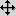
. Вы увидите
фон, то есть мы только что вырезали кусок изображения и передвинули
его.
Нажмите "
ctrl+z" для отмены этой операции, и переместите
выделение снова, но на этот раз удерживая "
alt". Теперь изображение
не вырезается, мы просто передвигаем границы выделения.
Когда Вы выделяете
новую область изображения, Ваше предыдущее выделение пропадает.
Вы можете
сохранить первое выделение удерживая "
shift" (в последних версиях
рядом с курсором появляется "+"). В этом случае Вы выделите два прямоугольника
одновременно.
Аналогично Вы можете добавлять к выделению окружности, эллипсы
и другие фигуры.
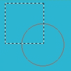
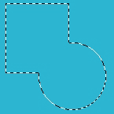
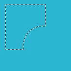
Чтобы
удалить какое-либо выделение, можно использовать те же инструменты, удерживая
клавишу "
ctrl".
Теперь, давайте сделаем более сложное выделение и заполним его другим
цветом.
На нашем изображении теперь два цвета. Когда Вы выберете один из них
с помощью
"волшебной палочки",
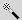
будет выделена вся область изображения заполненая этим
цветом. Если Вы нажмёте "
ctrl+i", выделение инвертируется; Вы можете
это проверить нажав "
ctrl+k" (удаление)...
Теперь пришло время поработать с
выделением по цвету: в меню, правой кнопкой мыши выберите
select -> by
color и затем всё что Вам останется сделать, это выбрать нужный цвет на
изображении.
The drawing pen
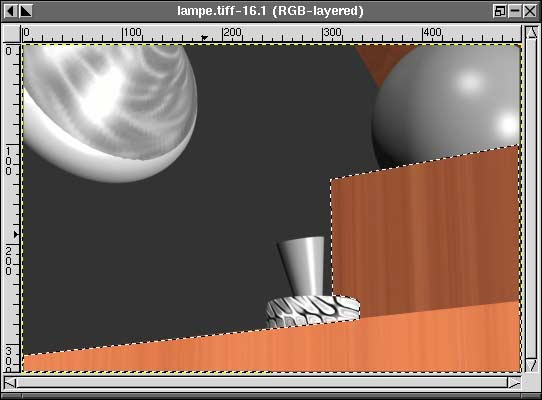
Перо - это базовый инструмент
для таких программ как killustrator, sketch ... (illustrator, freehand), но мы
будем использовать для создания выделений. Когда Вы будете его использовать
первый раз он может показаться Вам неудобным, особенно при создании точных
кривых. Возможно будет лучше, если Вы на время забудете про него и попытаетесь
воспользоваться им попозже в Gimp 1.0.4. Версии 1.1.9 и выше предлагают более
удобный способ для рисования.
Наиболее трудным участком в этом рисунке
является небольшая кривая по середине изображения. Следующие три шага описывают
принципы ее создания с использованием пера и кривых Безье; у математиков это не
должно вызвать никаких проблем... Остальные просто должны разобраться в общих
принципах и немного попрактиковаться.
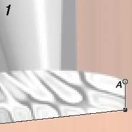
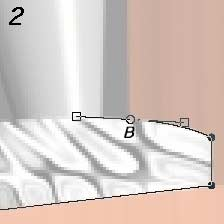
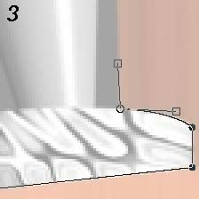
Для того чтобы получить
изображение 1 (в точке А), Вы должны просто щелкать левой кнопокой мыши от точки
к точке, до тех пор пока не получится изображение 2. Затем, после установки
точки В, переместите курсор влево не отпуская левую кнопку мыши. На экране
отобразится кривая и ее касательные; когда кривая совпадет с объектом, отпустите
кнопку мыши. Затем увеличьте длину касательных, передвинув маленький квадратик,
так чтобы кривая не изменила свою форму. Удерживая клавишу "
shift",
можно передвигать только левую касательную. Ее нам надо расположить вертикально,
по направлению к следующей точке... Когда Вы расставите все точки и замкнёте
кривую, можно нажав кнопкой мыши на изображении выделить его.
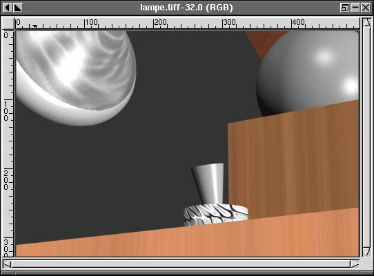
Сделав
выделение, вы можете изменить цвета. Здесь я всего лишь изменил значение
ползунка голубой/красный (cyan/red) в меню "баланс цвета" ("
right click
-> Image -> Colors -> Color Balance") в сторону голубого (cyan)
для того чтобы убрать яркий цвет дерева. В этом меню можно выбрать промежуток
тонов для изменения: светлые, средние, темные...
Принципы работы с
цветами:
1-- красный (red)---голубой (cyan)
2-- зеленый
(green)---пурпурный (magenta)
3-- синий (blue)---желтый
(yellow)
Слева мы видим основные цвета, справа -
второстепенные.
увеличение зеленого эквивалентно уменьшению
пурпурного
увеличение синего - уменьшению желтого...
Вы можете сделать
изображение краснее передвинув первый ползунок в сторону красного (т.е. уменьшив
голубой).
Но вместе с тем, Вы можете сделать тоже самое, передвинув второй и
третий ползунки в направлениях пурпурный (magenta) и желтый (yellow)
соответственно, на одно и то же значение. Для того чтобы получить более
оранжевый цвет, надо добавить желтого немного больше чем пурпурного. Для
холодного красного, наоборот, больше пурпурного чем желтого...
Аналогично,
желтый получается из красного и зеленого.
Для того чтобы проверить все
вышесказанное, лучше использовать изображение с однородным серым фоном.
"Волшебная палочка" и ручное выделение (горячий песок)
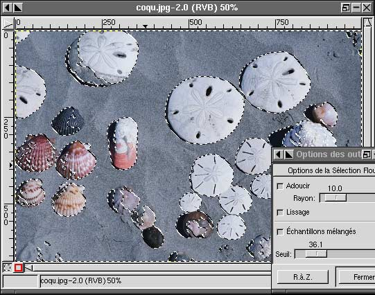
Сейчас мы покажем на
что способна "волшебная палочка"; всего одним нажатием кнопки на песке, мы
сможем изменить его цвет не затрагивая ракушки. Конечно нужно будет подобрать и
изменить некоторые параметры для инструментов (панель настройки параметров
появляется после двойного щелчка левой кнопкой мыши на пиктограмме
инструмента).
Это легко выполнить и придать окончательный вид выделению,
используя "лассо" и удерживая клавишу "
ctrl" для того чтобы убрать те
места которые нам не нужны:
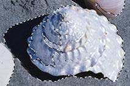
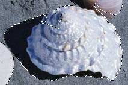
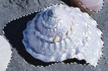
После того как мы всё сделали,
был бы неплохо сохранить наше выделение в отдельный канал: "
правая кнопка
мыши -> Selection -> Save To Channel".
Теперь у нас прибавился
один канал в списке каналов ("
Layers -> Layers & Channels").
Выберите созданный канал и нажмите "
channel to selection" -
сохраненное выделение активизируется.
Внимание! Для того чтобы
редактировать изображение Вам нужно вернуться к списку каналов и выбрать канал
для редактирования.
Для того чтобы сохранить изображение со всеми
добавленными слоями, Вы должны использовать "родной" формат Gimp (.xcf), в
противном случае все слои будут потеряны.
После того как мы выделили
песок, давайте воспользуемся другим инструментом для того чтобы изменить цвет
песка (сделать его более горячим):
Уровни ("Image -> Colors ->
Levels")
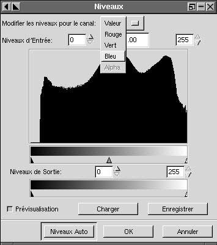
Выпадающее меню в окне "Уровни" позволяет Вам выбрать либо
пункт который позволяет корректировать плотность и общую контрастность, либо
цвет (для работы только с этим цветом).
Окно "Уровни" позволяет более тонко
корректировать цвета нежели "Баланс цвета".
Два крайних указателя регулируют
контрастность, центральный - изменяет средние уровни. Указатели выходных уровней
также регулируют контрастность, но другим способом, и так далее...
Есть
еще окно "
Кривая (curve)", оно обладает теми же возможностями, что и
"Уровни", но позволяет вносить больше изменений в зоны конкретных цветов.
Для
того чтобы изменить "теплоту" песка надо подредактировать синий и красный цвета.
Отметьте флажок "preview" для того чтобы тут же просматривать все изменения
которые Вы выполняете.
Для того чтобы выделить раковину (которой мы
хотим изменить цвет), мы можем использовать выделение песка (записаное в
канале). Его надо активировать и произвести инверсию. После выполнения этих
действий мы получим выделенными все раковины. Чтобы выделить только одну,
воспользуемся "лассо" с нажатой клавишей "ctrl" и исключим из выделения все
ненужное.
Для редактирования цветов можно также воспользоваться
"
насыщенность-оттенок" ("Image -> Colors -> Hue-Saturation"). Вы
можете регулировать либо общий оттенок, либо конкретный цвет. Верхний указатель
используется для замены выделенного цвета.
Второй регулирует насыщеность
освещения.
Третий отвечает за насыщеность; передвинув его до конца влево
получим черно-белое изображение (эквивалент команды "Image -> Colors ->
Desaturation").
Полезно воспользоваться "ctrl+T" на выделенной раковине
(делает выделение невидимым) - так удобнее работать.
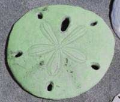
Пример изменения насыщенности
оттенка
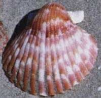
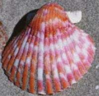
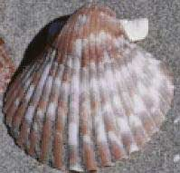
Первое изображение - оригинал. Второе - результат увеличения
насыщенности для красного цвета, третье - уменьшение насыщености для того-же
цвета
Вот измененное изображение, с более теплым песком и изменённым
цветом некоторых раковин (оригинал справа):
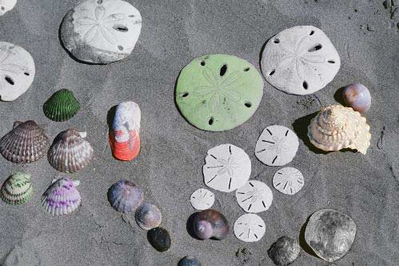
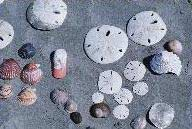
Маски и "лассо" (погружение)
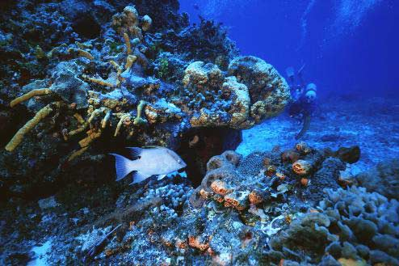
На этом изображении преобладает
синий/голубой цвет. Картинку можно улучшить подправив две зоны: сначала передний
фон, а затем рыбку, которая является частью переднего фона.
Для того
чтобы иметь возможность работы с масками, я использовал Gimp версии 1.1.9 (на
время написания статьи - нестабильная версия). Повторюсь, что эта версия очень
проста в установке (на Red Hat 6.0). Работа с масками также возможна в версии
1.1.8 ...
С помощью лассо, Вы должны обвести контуры рыбки (можно даже
неточно) и затем нажать маленький красный квадратик слева внизу окна.
Теперь
все изображение будет красноватым, за исключением выбранной рыбки.
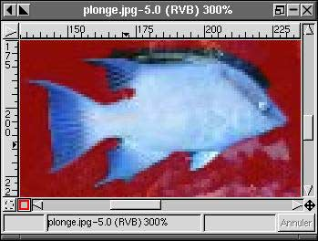
Для
того чтобы улучшить выделение так, чтобы оно точно окружало рыбку, используйте
кисть.
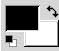
Когда цвета выбраны так как показано здесь (чёрный - основной, белый - фоновый),
краснота добавляется. Для того чтобы наоборот убрать красноту, нажмите клавишу
"x" и цвет фона и основной цвет поменяются местами. Так что если мы случайно
замазали красным рыбку, можно легко всё исправить...
Само собой, размер кисти
надо подобрать так чтобы было удобно ей работать. Также можно подрегулировать
"мягкость" ("softness") кисти исходя из резкости объекта.
Вы можете изменить
цвет маски (как говорилось выше, стандартный цвет - красный) и его прозрачность,
дважды щелкнув мышью на красном квадрате. Так что если у Вас изображение с
которым трудно работать со стандартной красной маской, Вы можете изменить ее
цвет.
После того как мы закончили создание маски, надо вернуться в нормальный
режим, выбрав маленький квадратик, который представляет собой выделение (он
находится слева от красного квадрата).
Затем мы сохраним наше выделение в
канал.
Теперь выделите передний фон, пользуясь той-же техникой что и
выше.
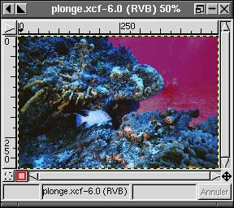
Сохраним выделение (аналогично предыдущему).
Теперь мы
изменим передний план, не трогая рыбку:
В списке каналов окна "layers and
channels", выберите маску переднего плана (ее очень легко распознать по форме),
затем щелкните на иконке, изображающей пунктирную окружность внизу панели
инструментов. На изображении выделится передний фон.
Затем выберите маску
рыбы и нажав "ctrl" щелкните на иконке пунктирной окружности. Этими действиями
мы вычтем рыбку из выделенного переднего плана.
Теперь займемся
коррекцией цвета:
Вернитесь в список слоёв и выберите нужный. Затем
используйте "уровни" (levels) для того чтобы добавить больше красного и жёлтого
к переднему плану. Потом увеличьте насыщеность красного и жёлтого при помощи
"оттенок/насыщеность" ("hue/saturation")
Сделайте тоже и с рыбкой, только
немного посильнее и добавьте побольше контраста и яркости:
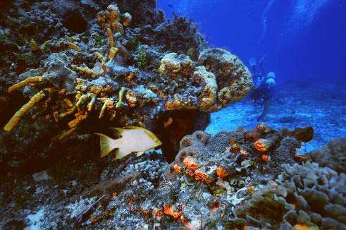
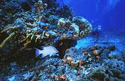
Маска с размытым контуром (глаза)
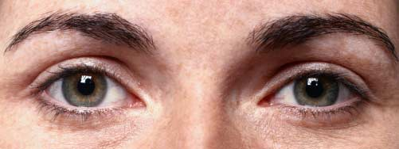
Для того чтобы изменить цвет глаз
на этом изображении, нужно воспользоваться выделением с нечёткими краями,
поскольку глаз состоит из различных элементов, между которыми нет чётких
границ.
Нечёткое выделение может буть получено с помощью "Пера" (select ->
feather) или с использованием инструментов выделения с установленной опцией
"мягкие края" ("soften edge"). Но таким способом довольно трудно получить
правильное выделение, особенно в версиях ниже 1.1.8.
Вот решение данной
проблемы:
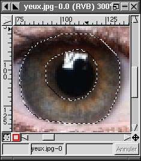
Сделайте первое выделение вокруг круглого объекта,
используя "лассо". Тем же инструментом, уберите чёрную часть выделения,
удерживая клавишу "ctrl".
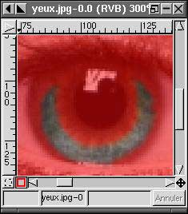
Вы можете проверить точные
размеры выделения, если переключитесь в режим маски. Воспользовавшись "мягкой"
кистью (или аэрографом) и установив основным цветом - чёрный, а фоновым - белый,
можно сделать выделение более правильным. Воспользуйтесь клавишей "x" для того
чтобы обменять цвета. Очень важно убрать все чёрные и тёмные области из
выделения и установить предел размытости так, чтобы сделаные потом изменения
были правдоподобными. С такой системой масок, очень легко их проверять. Клавиши
"ctrl + z" помогут Вам отменить неудачные попытки и позволят Вам попытаться еще
раз.
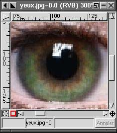
Здесь я использовал "уровни" (вход): средний ползунок (зелёный)
налево, а левый ползунок - направо. Затем добавил немного насыщености для
зелёного и жёлтого.
Тонкая настройка...
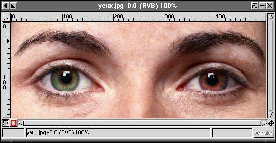
Вот и всё. Я надеюсь эта статья
поможет получше узнать достоинства отличной утилиты - GIMP. Теперь, я надеюсь,
Вы не будете ждать, а тут же приметесь за редактирование своих
фотографий...
Несколько ссылок:
- На сайте Gimp Вы сможете почитать
Руководство Пользователя GIMP: "GUM", в формате PDF или HTML.
- Бумажная версия Руководства также продаётся в книжных магазинах.
- Другая книга, "The artist's Guide to Gimp", опубликована MCD2.
- LinuxArtist.org : Ресурсы для
художников, использующих Linux : Ссылки на учебные пособия, приложения,
новости, галереи ...
Страница отзывов
У каждой заметки есть страница отзывов. На этой
странице вы можете оставить свой комментарий или просмотреть комментарии других
читателей.
Webpages
maintained by the LinuxFocus Editor team
©
Yves Ceccone, FDL
LinuxFocus.org
Click here to report a fault or send a comment to
LinuxFocus
|
Translation
information:
|
2001-09-10, generated by lfparser version 2.17